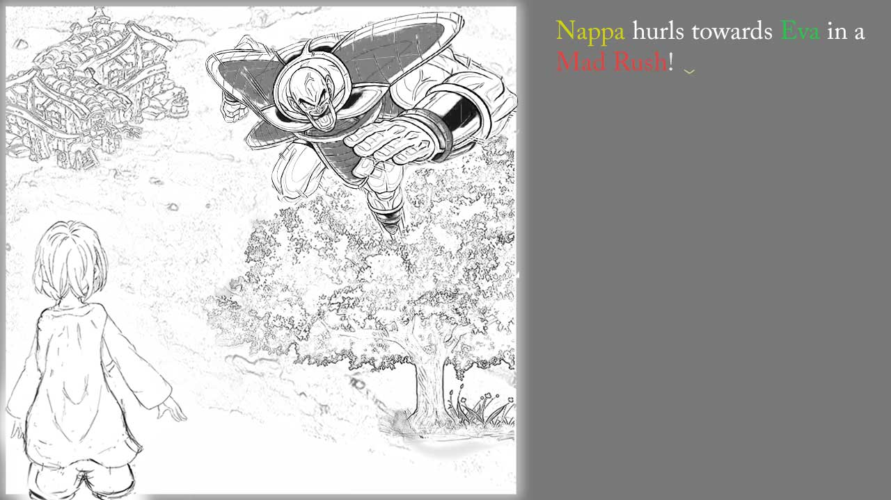
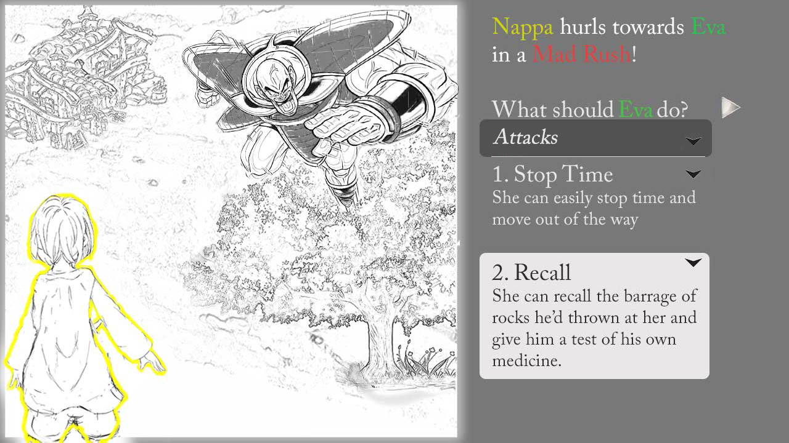
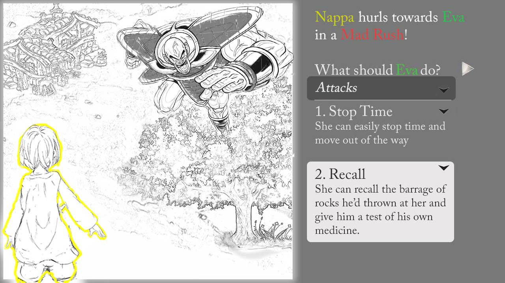
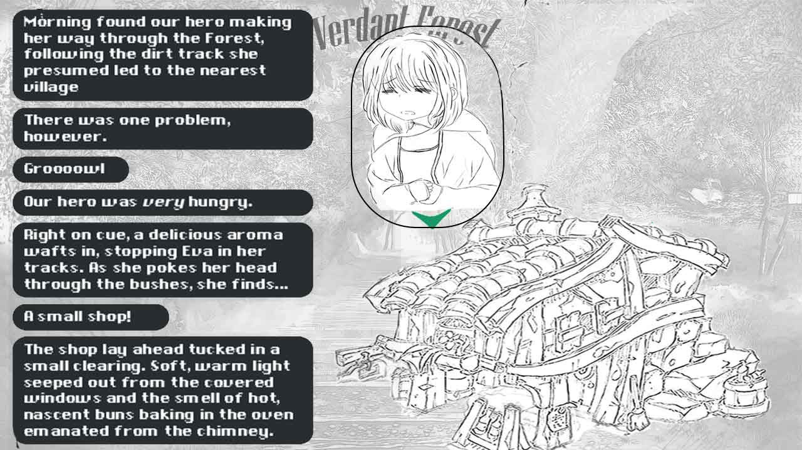
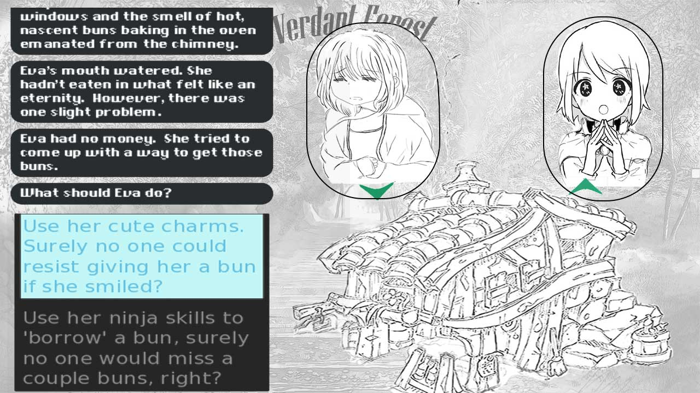
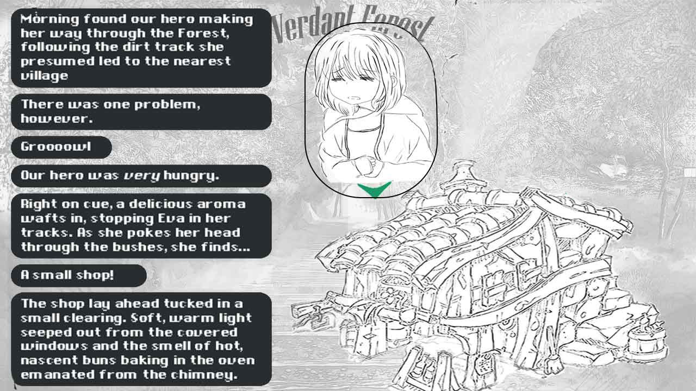
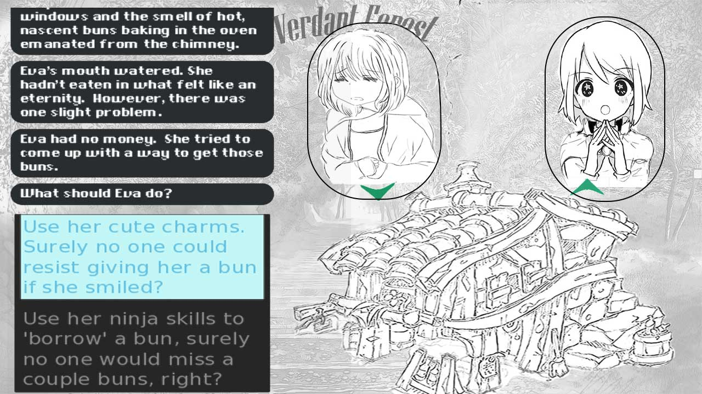

An example:
So finally, you're here after reading through the Plot and Gameplay pages I've made you read! (or atleast I hope you've read them.)
Through this example I hope you understand how all the bits and pieces you've been reading make up the whole game. Before I begin I should mention that most of the pictures I have here were made by me, but if you see color anywhere then those image(s) have most likely been taken from the net and photoshopped on.
MAPS:
If you have read through the Plot, you'd know one of the main themes for the game is Journey. Thus, maps and the way the player travels through them is a vital part of the game as, if done well, it gives the "travelling adventure" vibe and I dare say even forms the backbone of the game.


First, the player is shown where they're at in the world map. They see where they are and where they want to go, and then click on the place they are currently at to see the route. This opens another smaller map showing their immediate surroundings, like this one:

Here, you basically click the small nodes and work your way accross till you reach the end of the map.
This image was taken from the middle of the map; scrolling left would take you to the starting point and scrolling right to the end of the location (like to the edge of the forest and into the next location). Maps start at a single point and branch out, giving players many ways to traverse. If you haven't already noticed, this style has been 'inspired' by Slay the Spire, and apart from some nodes reserved for story events, each node leads to different outcomes like combat, treasure, meeting new characters, character interactions due to the location (like when the cast of a JRPG is near the beach, you sure as hell know what's gonna happen next) or other scenarios.
COMBAT:
This is the first tutorial fight of the game. One aspect I'm trying to incorporate is that the player shouldn't remember the move (like Thunderbolt), they should remember what it does. This will help when you want to make your own solutions, like if you have a water mage and yourself in a party and you want to cast Thunder on their water spells, you can Talk to them to devise a strategy or Attack their water spell with Thunder thereby combining both spells.
This is a completely cooked up scenario, but imagine you've got Nappa, the villain, running towards Eva to trample her.

You can click on her name to see her status (everything above her name is one big button that shows the 'status' screen below) -
 Back to the story, our hero has a couple options, namely to dodge or counterattack -

She chooses Recall, a move that rewinds time and unleashes any attack made during the course of the battle at the enemy.
This leads to a small scene of Eva recalling some rocks -
Back to the story, our hero has a couple options, namely to dodge or counterattack -

She chooses Recall, a move that rewinds time and unleashes any attack made during the course of the battle at the enemy.
This leads to a small scene of Eva recalling some rocks -
 And slamming it into Nappa (sorry I didn't draw him getting pwned).
And slamming it into Nappa (sorry I didn't draw him getting pwned).
Behind the scenes:
There's a few functions like [damage calculator], ... and ... Basically, when you choose an attack it's damage is compared to the opponent's attack (if someone's attacking) or (put simply,) their defense or agility (if they're defending or evading). You can string attacks together to multiply it's damage or add effects (this works for defence and others as well).There are turns and stamina to prevent misuse of OP moves, and ... well honestly listing out the entire gameplay is tiring so if you're interested, maybe come chat a while?
Dialogue:
Screen is divided in 2 - There's a box ('viewport') for dialogue to the left, and one for showing character expressions to the right. I wanted something that read like a novel and was as expressive as a comic, and this is what I got. With sound effects and branching storylines, this becomes a damn good experience.
 




 Of course, it needs more work and polish but it's an interesting way to tell a story, and one I definitely see potential in.
Of course, it needs more work and polish but it's an interesting way to tell a story, and one I definitely see potential in.